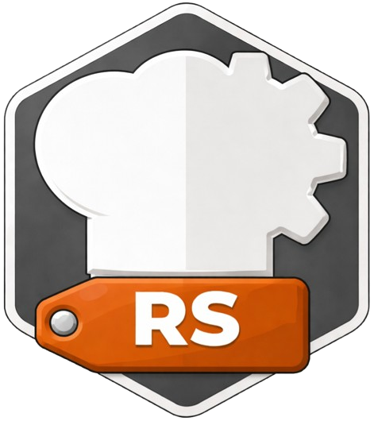

PROJECT

ZZX-LABS R&D // CYBERCHEFKIT
CyberChefRust
Rust-based CyberChef primitives companion with reference recipe execution, Cargo library/CLI generation, WASM-bindgen interface scaffolding, deterministic vectors, target configuration, and portable bundle export.
RUST // SAFE PRIMITIVES + WASM
CyberChefRust Workbench
REFERENCE ENGINERUST CODEGENCARGOWASM SCAFFOLD
WASM
Safe web-facing interface scaffold
The browser generates a wasm-bindgen-compatible API and target commands but does not fabricate a compiled `.wasm` artifact.